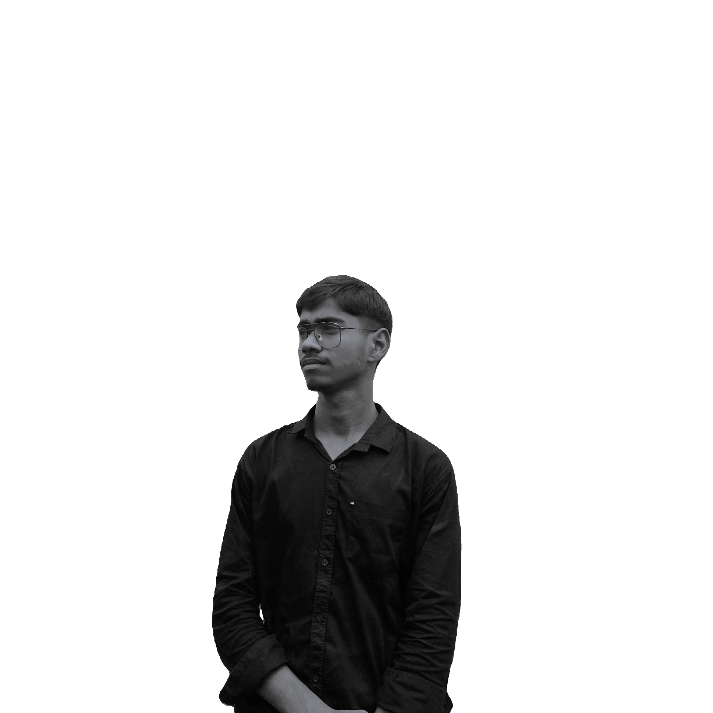

Work spanning front-end development, UI/UX design, and graphic design — each project a step forward in building meaningful digital experiences.

Built a fully responsive personal portfolio using HTML, CSS and vanilla JavaScript. Includes smooth scroll, animated sections, mobile-first layout and cross-browser support.
Designed and coded an e-commerce product listing page with cart functionality, product filtering, and responsive grid layout — built during internship at Cyber Core Technology.
Created clean, user-centred mobile app UI mockups in Figma including wireframes, component library, typography system, and interactive prototype for a food delivery app.
Social media graphics, posters and brand identity assets created using Canva and Adobe Photoshop. Work includes event posters for Rotaract Club campaigns.
During my 45-day internship, built 5+ responsive web pages with full cross-browser compatibility, semantic HTML, clean CSS architecture and interactive JS components.